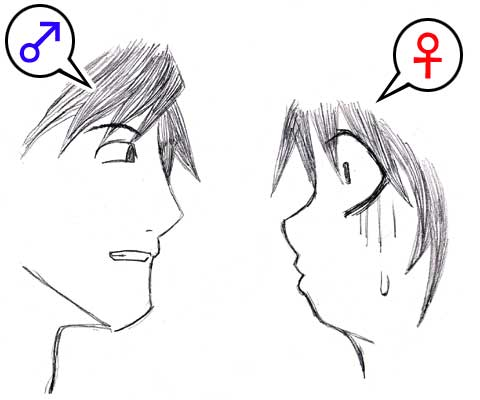

ドンドンドン
ある晴れた朝にけたたましい音が響く
早朝のアパートに、その雰囲気は場違いに思えた
「オラー！いい加減に金返せっ！！」
「もうとっくに借金の返済期限は過ぎてるんだよっ！！」
言動はともかく、格好を見るとまるで普通のサラリーマンの男が二人、アパートのドアを叩いていた
彼らは一般的に借金取りと呼ばれる職種の人間である
しかし闇金融や高利貸しの類ではない
ごく普通の金貸し屋だ
「駄目ですね〜。こりゃ中に居ませんよ」
「逃げたのか・・・あのヒモ野郎がっ！」
『ヒモ野郎』————世間的にこの言葉は女性に収入源を頼るだけで、ただ紐や糸くずのようにくっついているだけの男性をさす言葉である
事実、この部屋の住人は借金をしては交際中の女性に返済させると言う超が付くほどの駄目人間だった
「奴の女の住所なら押さえてあります。押しかけますか？」
「・・・いいや。出直そう。俺はフェミニストだからな。女には優しくしなきゃいけねえ」
「まったく。許せない奴ですね。そんな奴と付き合う女も気が知れませんが・・・」
「おうっ！必ず本人から取り立ててやるからなっ！」
そう言って二人はアパートから引き上げていった
表札には大琴 博正（おおこと ひろまさ）と記されている
どうやらそれがこのアパートの一室の主の名前らしかった
|
|
| ↑彼女↑ | ↑博正↑ |
「・・・行ったみたいよ」
「ふぅ〜、おっかなかったぁ〜」
二人の借金取りが撤退したのを見計らい、若い男女はホッとしたように声を漏らした
実はこの二人が居る場所は先ほどのアパートの一室で、ただ中から鍵をかけて居留守を使っていただけだった
「ったくっ！しつこい奴だぜっ！たかだか一ヶ月や二ヶ月返済期間を過ぎたくらいでよぉ！」
「・・・これで何回目よ。いくら返し終わってもまた借りてっ！」
ヒモに成り下がった男を世話する女は大抵こんな事を言う
だが結局男から離れる事ができないのだ
「うっ。ま、まあいいじゃねーか」
「私はもう嫌よっ！水商売なんてもうやりたくないのっ！博正だってもっと真面目に働いてよっ！」
しかし彼女はこの時ばかりはいつもの様子ではなかった
「・・・すまん。お前の気持ちは痛いほど解かる。でも俺はお前がいなきゃ生きていけないんだよ」
いけしゃあしゃあと心にも無い事を言い出す博正
対する彼女はもう我慢の限界だった
この駄目男に見切りをつける覚悟はできていた
「本当に私の気持ちがわかるのっ！？」
「ああ。俺ができれば代わってやりてーよ」
もちろん博正は本気で言っているわけではない
彼にとってはこの程度の台詞は日常生活レベルで使っているものだし、何よりも男の博正が女の彼女の代わりなどできるはずがないのだ
しかし・・・
「じゃあ代わってみる？」
「はっ？」
まさにこの一瞬だった
コンマ１秒にも満たない一瞬で視点が切り替わった
まるでテレビのチャンネルを変えるかのように何の前触れもなく
博正の視線が少し低くなったのだ
そして博正の目の前に博正が立っているという一種異常な状況が作り出された
もちろん客観的に見ればそこには普通の男女が立っているに過ぎない
しかし博正からは自分がもう一人立っている方に感じた
「代わってくれるんでしょ？がんばってね。生活けっこう苦しいから」
「えっ？何なんだよっ！？おいっ！？うわっ！む、胸っ！？俺が目の前にっ！？」
動揺しまくる博正
いや、もう博正ではない
その姿は世界中の誰が見ても女性と判断できるものになっていた
文字通り博正は彼女に体を取り替えられたのだ
彼女の代わりにされたのだ
 |
|
| ↑彼女↑ | ↑博正↑ |
————数年後
「はい。これでこの話はおしまいです」
「・・・」
これはあるホテルの一室での会話である
話しているのは女の方
男は興味深そうに聞いているだけだった
「どうだった？少し理解しづらい話だったかしら？」
「いいや。すごく面白かったよ。佳代（かよ）は意外と話し上手なんだね」
男は当初、下心から付き合っていた女性をホテルに誘った
ホテル代は女持ちと言う情けない話だったが、４ヶ月前に出会った時から彼はこの女に頼りきっていた
要するにこの男も目の前の女のヒモなのである
「ところで女になっちゃった彼・・・え〜と、博正君だっけ？その後どうなったの？」
「そうねえ。皮肉な事に男になった自分の彼女に捨てられちゃったのよ。その後も別のヒモの男に捕まったりしてひたすら水商売。言葉の通り彼女の代わりになったわけ」
「自業自得か。お話だと言っても耳が痛いな」
「後付だけどね。博正になった元彼女は自分で働いて借金を解したらしいわ。ちょっと真面目に働けば自力で返せる金額だったのね」
「ふーん。まるで俺たちみたいだな」
「—————そうね」
男は初め、ホテルに連れ込んですぐに行為に及ぼうとしたのだ
しかし１つだけ物語を話させてくれと言う彼女の強い希望があった
初めは仕方なく聞いていた彼だったが、いつの間にやらその話に引き込まれてしまったのだ
恐らく彼自身の境遇と重なる部分が多いからだと思う
「あ、そうだ。ずっと気になってたんだけど男になった彼女の名前は？まだお話のもう一方の主人公の名前を聞いてないじゃないか」
気軽に言ったこの一言
彼女は何故かこの一言で表情を硬くした
「・・・聞いても絶対驚かない？」
「なんだよ？もったいぶるなよ。たかだかお話だろ？一応知っとかないとスッキリしないだけなんだからさ」
あくまで軽口をたたく男
対照的に女の表情は真剣そのものだ
「その娘の名前はね・・・夢神、夢神 佳代（ゆめかみ かよ）。これがさっきの話の彼女の名前よ」
「なっ！？そ、その名前はっ！？」
男は驚愕した
彼女が口にしたその名前こそ、目の前の彼女自身の名前だった
◆後書き◆
短くまとめる練習でした
いや〜、とにかく楽です
でもハッキリ言って駄作ですね
一体私は何を小説中で語ろうとしているんでしょうか？
こんな小説なら次回もさくさく書けるような気がしてきました
□ 感想はこちらに □